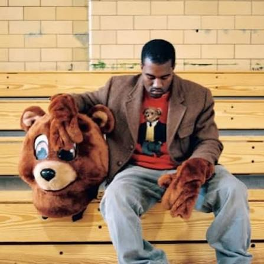
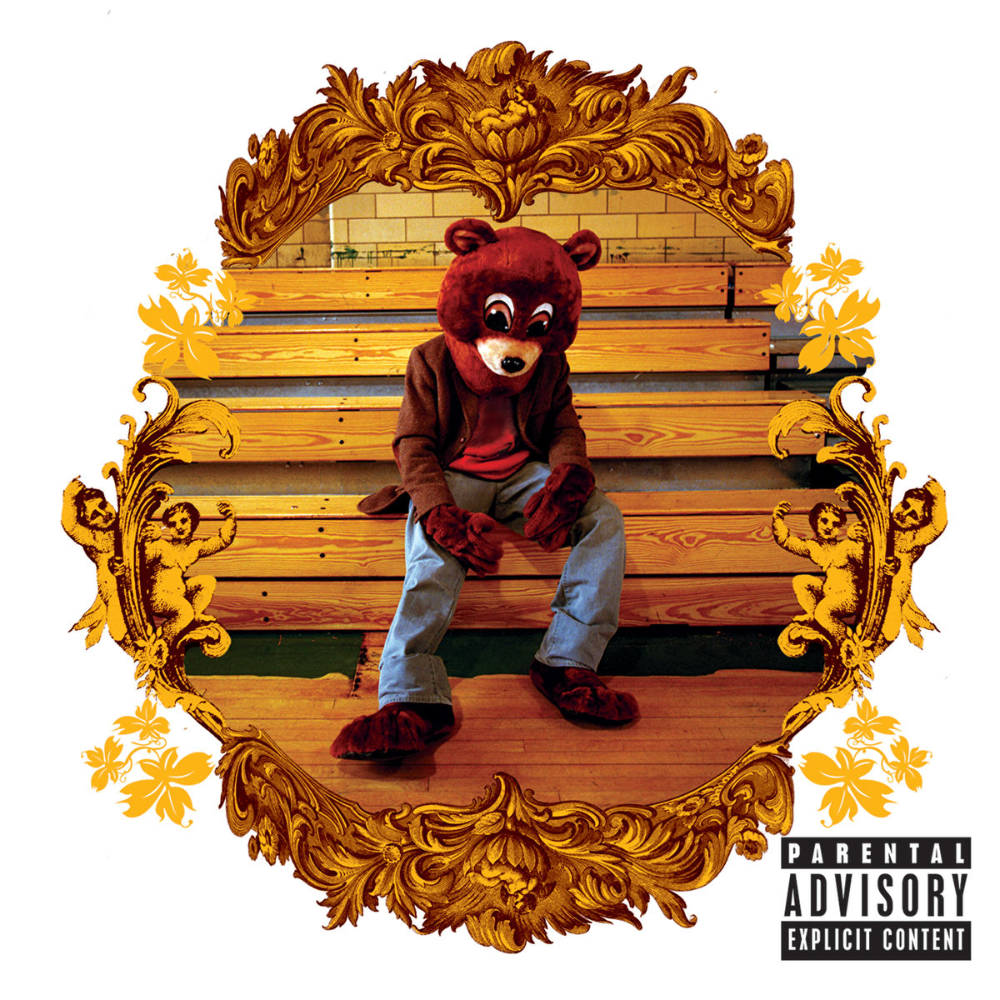
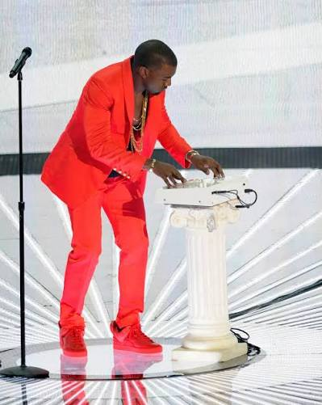
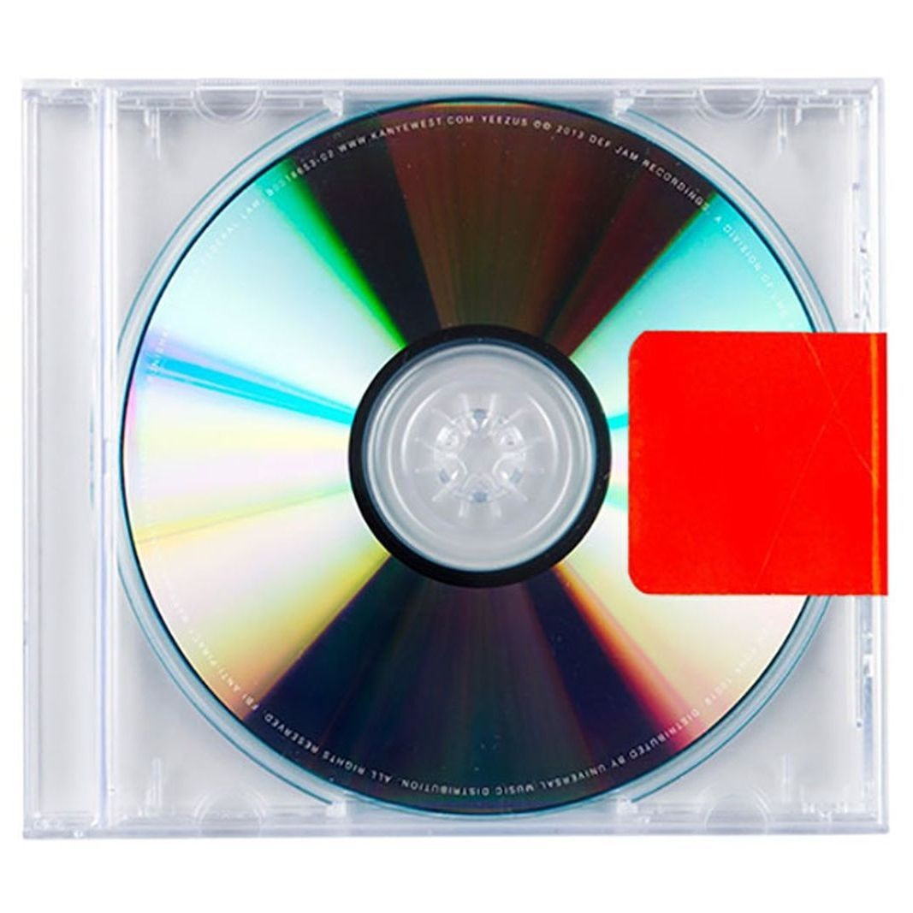
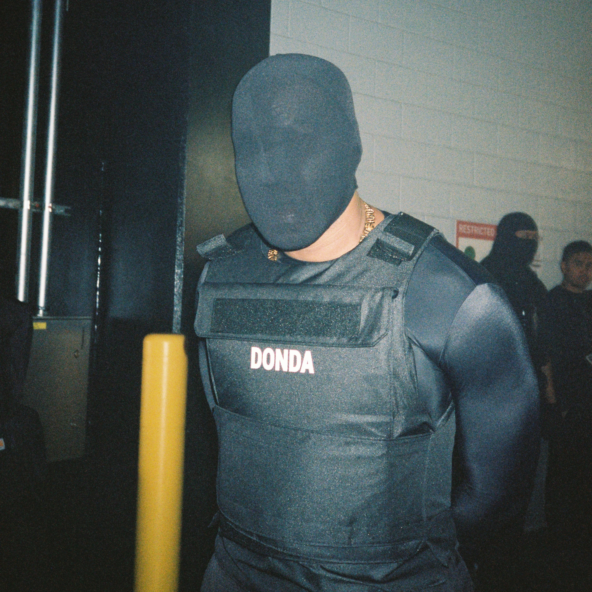

Kanye Omari West (Ye) es una de las figuras más influyentes del siglo XXI en la música, la cultura pop y el diseño. A lo largo de su trayectoria, ha redefinido el hip-hop constantemente. Su evolución musical siempre ha ido de la mano con una transformación radical en la alta costura y el diseño de modas.
Desde sus inicios como productor con sudaderas universitarias, pasando por la experimentación emocional de obras maestras, hasta llegar a las siluetas monocromáticas y minimalistas de su etapa actual en la Era Minimalista, Kanye ha demostrado que el sonido y la estética visual son completamente inseparables.
Discos clave: The College Dropout, Graduation
Kanye rompió el estereotipo del rapero gánster tradicional usando suéteres Polo Ralph Lauren, mochilas Louis Vuitton y el icónico oso universitario. Esta etapa cerró magistralmente con Graduation y su estética futurista/pop de la mano de Takashi Murakami, cambiando para siempre el sonido del rap comercial.
↑ Volver arriba

Discos clave: MBDTF, Yeezus, Ye, Kids See Ghosts
Una era de máxima ostentación que mutó hacia el brutalismo industrial de Yeezus. En 2018, desde Wyoming, entró en una fase de extrema vulnerabilidad personal y musical con su álbum homónimo Ye y el aclamado proyecto conjunto Kids See Ghosts con Cudi, consolidando además la marca Yeezy con Adidas.
↑ Volver arriba

Discos clave: Donda, Vultures, Bully
El enfoque actual gira en torno al góspel, texturas minimalistas y conceptos visuales oscuros (como las capuchas y máscaras de Donda). Con destellos hacia nuevos horizontes creativos y el anticipo de discos como Bully, Ye sigue retando las reglas de la industria y la moda utilitaria.
↑ Volver arriba